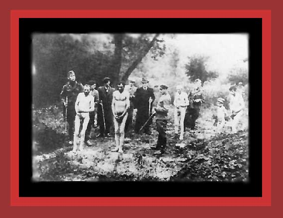

| Here is a photo of men and a boy stripped naked and about to be shot to death by Germans or their auxiliaries. Two wait for their death at the edge of a pit, while two men and boy are walking over to join them. Documentation: Democide: Nazi Genocide and Mass Murder. Source: "The Undeniable Holocaust." From Himmler, Reichsfuhrer-SS, by P. Padfield, Henry Holt & Co., New York, 1990. |